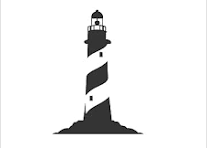

La inteligencia artificial continúa avanzando rápidamente y está siendo utilizada en distintas áreas para mejorar procesos y servicios.
La diferencia de ingresos entre hombres y mujeres sigue siendo un tema importante y genera debate en distintos países.
El cambio climático continúa afectando al planeta con altas temperaturas, sequías y cambios en el entorno natural.
Representantes chilenos obtuvieron buenos resultados en competencias internacionales de patinaje artístico.
Los emprendimientos digitales continúan creciendo gracias al uso de internet y nuevas plataformas de venta.
Muchos negocios pequeños utilizan redes sociales para mostrar sus productos y aumentar sus ventas.
Cada vez más mujeres participan en el desarrollo de proyectos tecnológicos y nuevos emprendimientos.